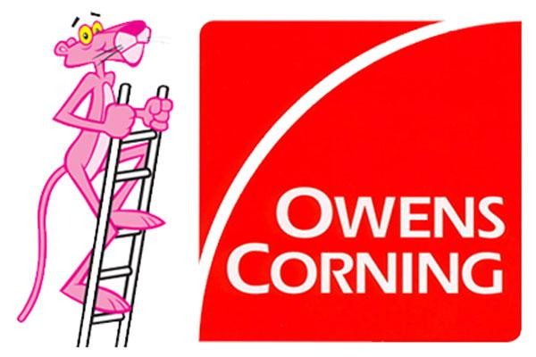

Knox Enterprises Inc. was founded by owner, Lee Marino, 30 years ago. Originally formed as R&L Construction, Knox Enterprises was a small window and siding company, ventured by a pair of twenty-two year olds. Slowly, the company grew attraction with its superb quality of work and customer service.
After 10 years in business, Knox Enterprises became a contracter with leading basement finishing company, Owens Corning in Northern New Jersey. While working with Owens Corning, the Knox Enterprises team became a leading basement finishing contractor in Northern New Jersey.
Knox Enterprises has since moved on, and now performs general contracting and full home renovation in the Northern New Jersey area.